Análisis descriptivo sobre 30.086 investigadores reconocidos en seis convocatorias y 3,16 millones de productos académicos registrados por MinCiencias. Una mirada cruzada a las personas, su producción, los territorios, los campos OCDE y la trayectoria de categorías en el tiempo.
evidencias/calidad_atipicos_edad.csv.La comparación justa sería contra población con educación superior, no contra población total — la brecha real es menor pero sigue siendo significativa.
Cobertura · productividad por categoría · brecha de género en outputs
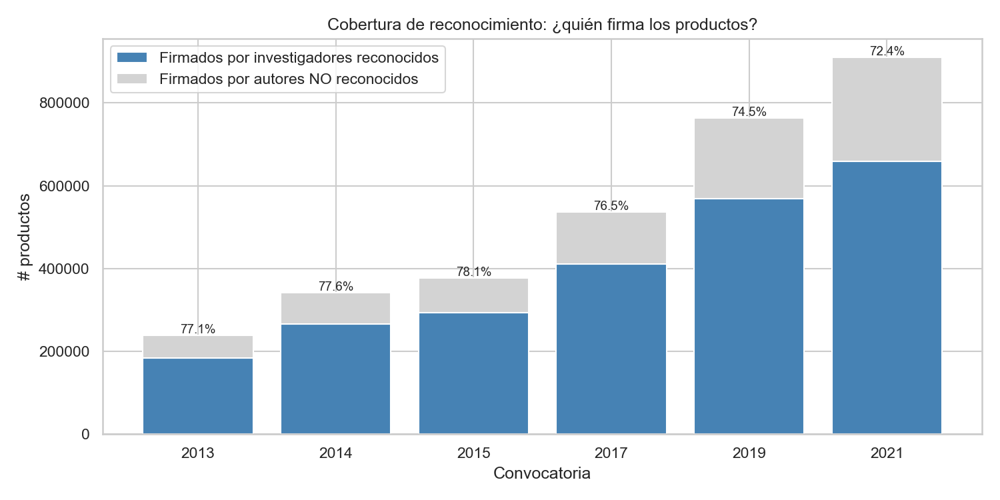
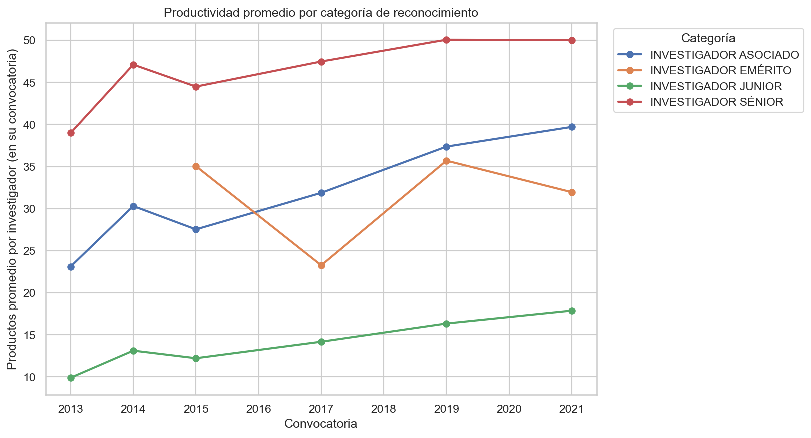
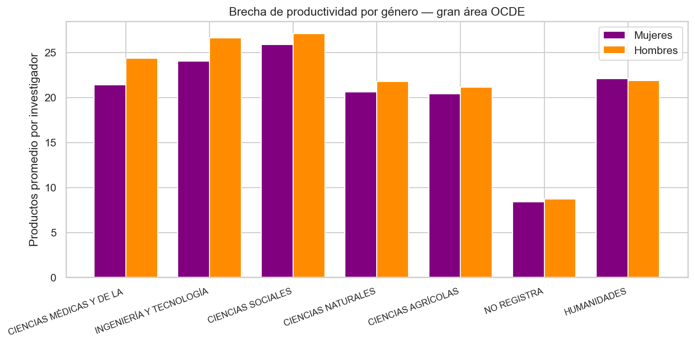
Dónde viven · dónde trabajan · participación femenina por departamento
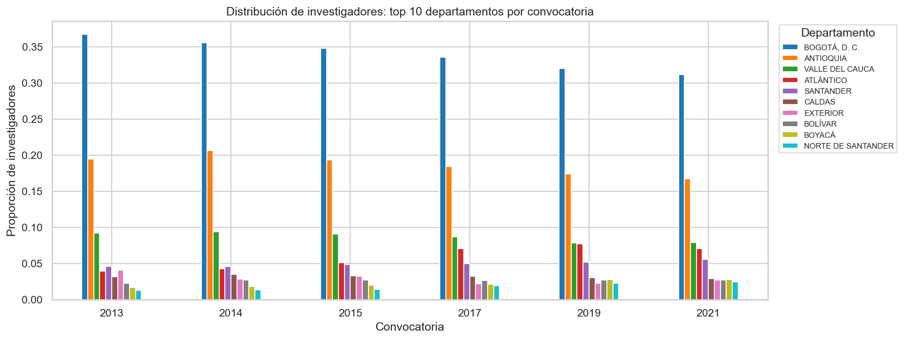
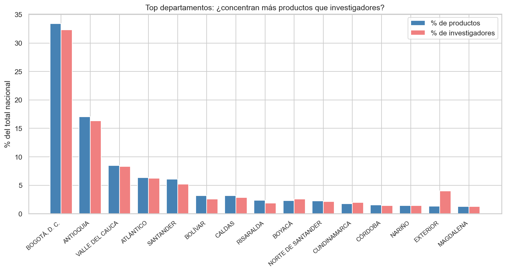
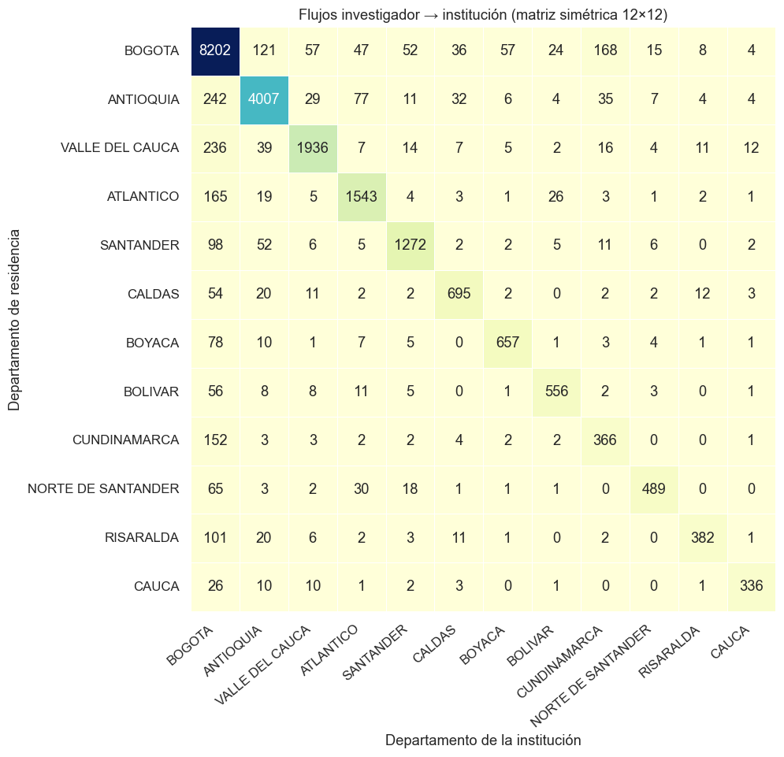
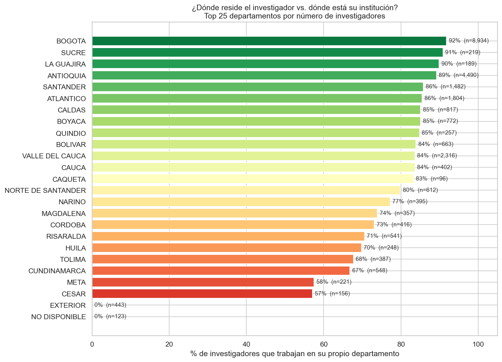
% del padrón departamental que trabaja en una institución del mismo departamento.
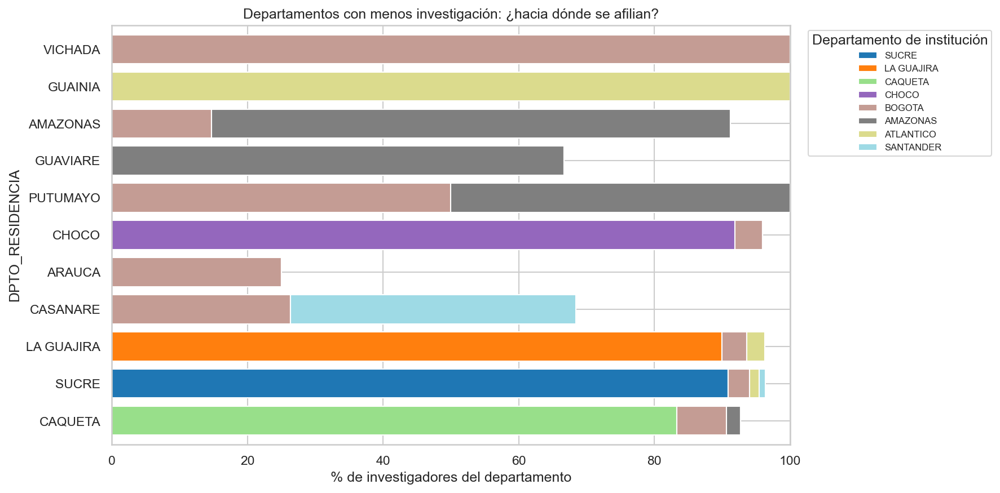
Para departamentos < 500 reconocidos: a dónde van los que no se quedan.
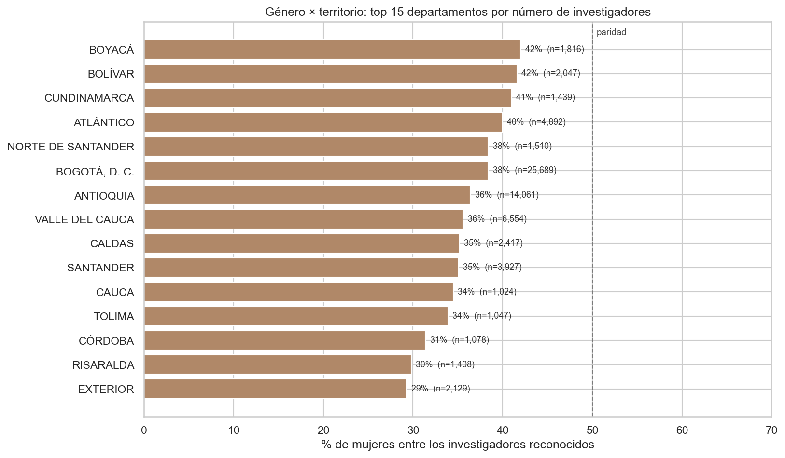
Volumen · productividad por área · composición por género dentro de cada disciplina
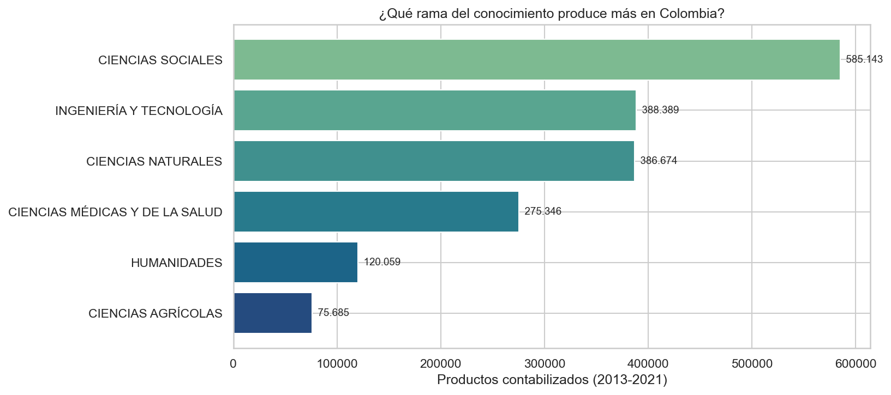
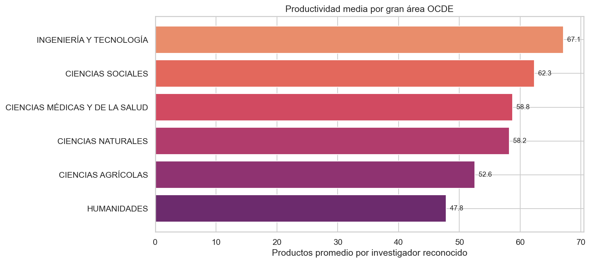
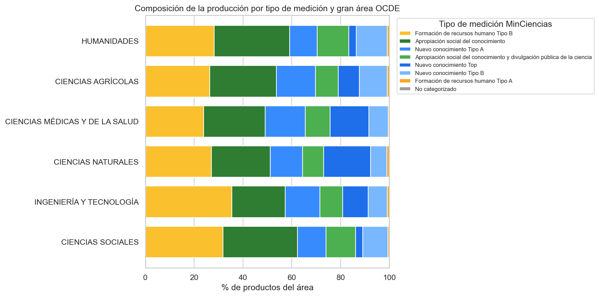
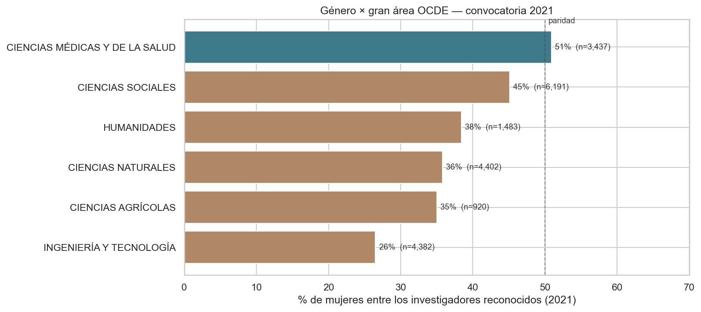
Cómo cambian las categorías de los investigadores a lo largo de seis convocatorias
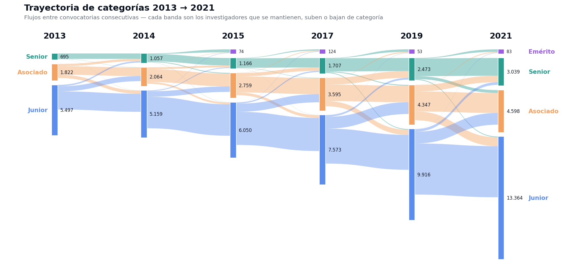
Cuatro líneas de acción que no requieren esperar a la próxima convocatoria
Las cifras, los caveats y el código están publicados para que cualquiera
los reproduzca. El manual técnico (docs/manual.ipynb) recorre
el pipeline completo, y el dashboard interactivo permite filtrar los
hallazgos por convocatoria, área y territorio.
github.com/ustadistica/Observatorio_Ministerio_de_Ciencias_Grupo8